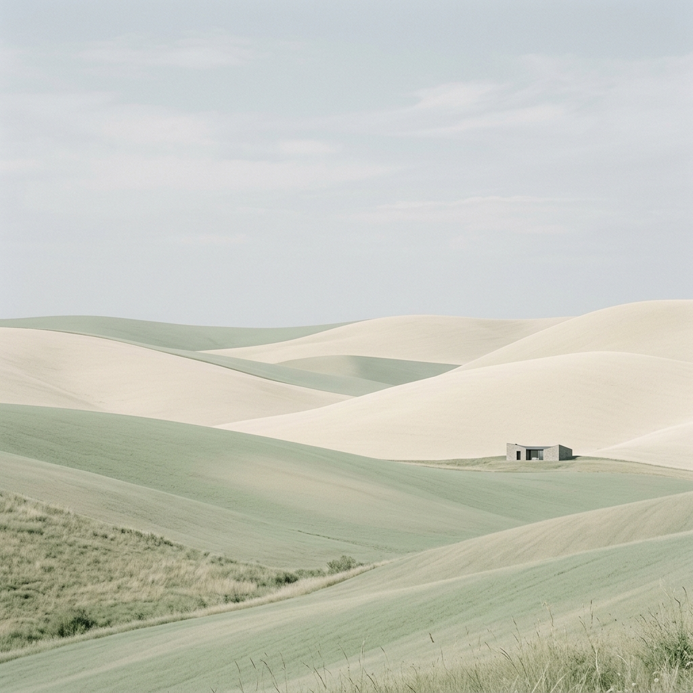
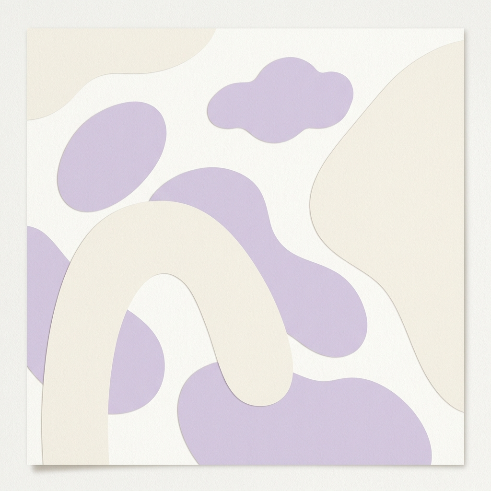
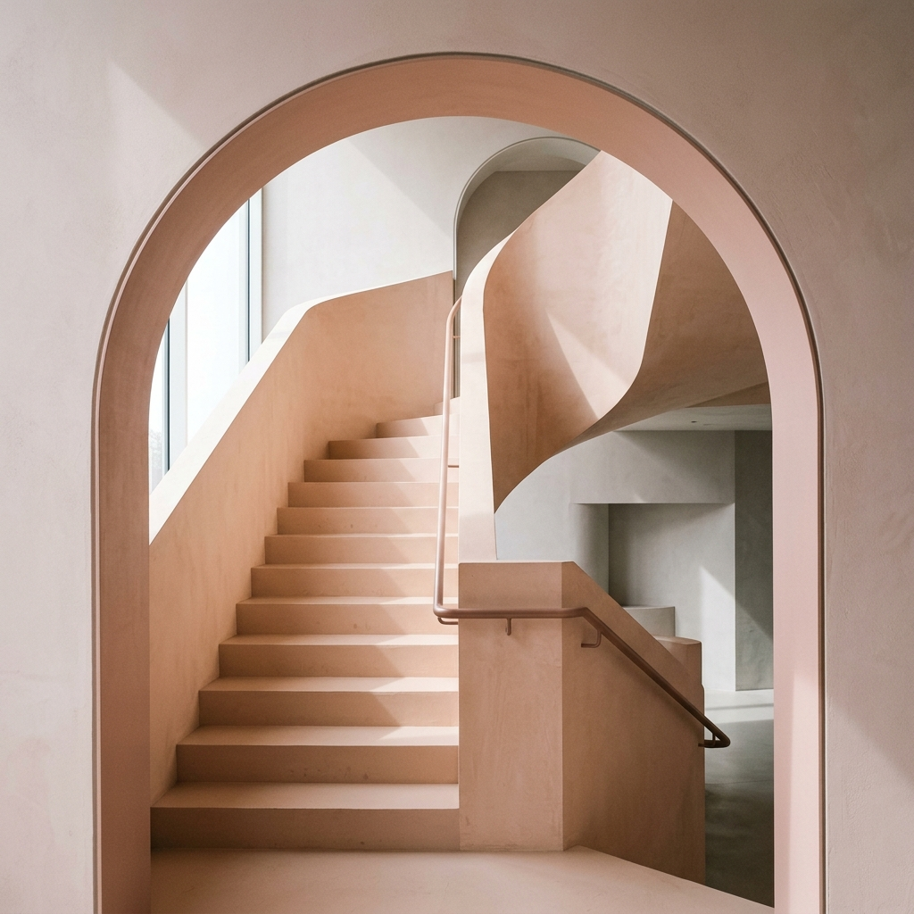

Motion Experiment 04
Sticky Scape

Sage Sanctuary
Minimalist rolling hills

Lavender Drift
Organic abstract composition

Blush Structure
Architectural geometric detail
Azure Calm
Serene ocean horizon
The End
Scroll back to relive the experience